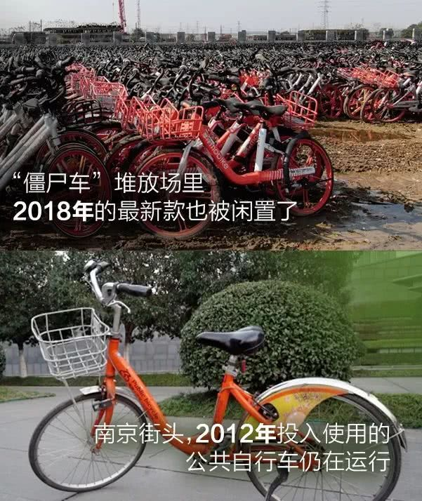

| 广告位 |
您现在的位置是：电商 >
共享单车生死局变 谁能先手做活
2019-11-20 14:32电商 人已围观
简介 要不是拍摄僵尸车这个题目，我们还不知道南京江宁有一条咸周路，这里有一处共享单车的坟场，与其它不同，这是...
要不是拍摄“僵尸车”这个题目，我们还不知道南京江宁有一条“咸周路”，这里有一处共享单车的“坟场”，与其它不同，这是一个摩拜单车的“专场”。
数据复盘，南京人公共骑行，很行！
看似陷入困局，但却有一丝光亮。
2018年12月底，南京公共自行车的年度数据发布，所有的骑行指标数据全部增长。数据显示，2018年分布在南京近3000个站点的98000辆公共自行车，全年总使用量超过4000万人次，累计骑行总里程9600万公里，大约可以绕地球赤道2400圈。市民公共骑行里程折合二氧化碳减排量2.1万吨，按蚂蚁森林公式换算，相当于一年种了14.3万棵樟子松。
2018年度骑行第一名的用户姓丁，骑行总次数3738次，日均超过10次，骑行总时长747个小时，总里程约8970公里。年度骑行次数超过2400次的头部用户达11名。
我们访到了2018年度季军，这位骑行达人很精神，完全不像64岁年纪，状态很年轻，爱骑车的南京人就是这么美。


南京公共自行车凝聚对一座城市的感情自动播放 00:00/00:00倍速 <> 在南京，只有南京公共自行车拥有“义务找车人”。两年了她还认得我？男孩进门就喊妈，看到对面女人的反应，泪奔了学雷锋树新风 爱心理发进疗区聚焦2019徐州国际马拉松赛：4532名志愿者服务赛事身边的变化 遗体捐献量激增 五年增长四倍市广电局开展义务献血活动冰灯游园会请志愿者免费看冰灯十年如一日的志愿服务 好姐赢得三水街坊真心赞好农村70岁爷爷过年还在干农活常年累月的在这工作，志愿服务已经成为了大姐的信仰！帮 关注：爱心学校走进病房 见证一场别开生面的开学仪式志愿者：志愿者节日慰问群众，送温暖失联20多年，美国女孩生日当天找到中国亲生父母上班族不用愁 浦东34个“爱心三点半”办班点启用琼海市三市一区指挥部深入街道开展党员志愿服务活动安吉 补拍结婚照 九对金婚老人圆梦
在南京，只有南京公共自行车拥有“义务找车人”。两年了她还认得我？男孩进门就喊妈，看到对面女人的反应，泪奔了学雷锋树新风 爱心理发进疗区聚焦2019徐州国际马拉松赛：4532名志愿者服务赛事身边的变化 遗体捐献量激增 五年增长四倍市广电局开展义务献血活动冰灯游园会请志愿者免费看冰灯十年如一日的志愿服务 好姐赢得三水街坊真心赞好农村70岁爷爷过年还在干农活常年累月的在这工作，志愿服务已经成为了大姐的信仰！帮 关注：爱心学校走进病房 见证一场别开生面的开学仪式志愿者：志愿者节日慰问群众，送温暖失联20多年，美国女孩生日当天找到中国亲生父母上班族不用愁 浦东34个“爱心三点半”办班点启用琼海市三市一区指挥部深入街道开展党员志愿服务活动安吉 补拍结婚照 九对金婚老人圆梦
是的，南京不仅仅有公共骑行的达人，还有“义务找车人”。秦东华这样的市民不仅是公共自行车的爱用者，更是“找车达人”，他曾在一个月里找回10辆车。
综合公开报道，2017年6月，国内首家共享单车“悟空单车”宣布停止运营，创始人表示投入1000多辆单车，找回不足100辆，亏了300多万元，“车不找了当做公益了”。无独有偶，同月3Vbike创始人巫盛华透露，他自掏腰包造了1000辆自行车，投放市场后仅找回几十辆，部分地区车辆丢失率达到100%。不管共享单车是什么颜色，也无论用补贴拉新的方式营造出什么样的惊人数据，只要说起车辆损耗和丢失率，各家都是“累觉不爱”。
似乎只有南京公共自行车才有这样的“义务找车人”。对秦东华的采访中，除了他热心公益之外，公共自行车“一扶二推三打客服电话”的管理机制的小规则起了大作用。
市民发现疑似被丢弃的公共自行车，先将车推上桩然后拨打客服热线，线索会被立即分发，管理人员第一时间赶到现场接手处理。车辆确认无误后，热心市民会得到一定奖励。虽然只是小小心意，但个人的善举被城市公共管理者“接棒”，在找车这件事上，市民和公共自行车公司形成了彼此激励的正反馈。市民、管理者共建城市秩序，爱南京的情感得到释放，流浪车在市民的帮助下不断回家。
一招生，一招死，谁解胜负手？
江宁咸周路上摩拜僵尸车的堆场有上万辆车，不少是新款的摩拜单车，新款就已面临废弃的命运。而在南京街头，公共自行车2012年投放的第一批车仍有50辆在运营。
根据2018年数据，南京公共自行车每辆车平均骑行近1000公里，这些2012年款按每年1000公里累计，已经骑行近7000公里。这正是共享经济的价值所在。
“南京主城区62000辆公共自行车遍布大街小巷，有些站点很偏僻，无可避免存在一些偷盗现象。但对比杭州、太原这些公共自行车规模较大的城市，南京的丢失率是非常低的，且呈逐年降低趋势。”
对于共享骑行，南京公共自行车的掌门人田峰盘得很细。
“如果南京有四十万辆共享单车，一辆按600元钱计算，这就是几个亿。几个亿可能在一两年里全部折旧完，甚至是产生报废，任何一个企业包括互联网公司也没办法承受这样的损失。”
在田峰看来，现阶段共享单车仍在靠资本续命。不同于互联网的“烧钱模式”，南京公共自行车要用“有限家底”保障市民“最后一公里”的出行需求。
作为最早投放公共自行车的城市之一，经过6年的发展，到2018年南京已有：
·公共自行车站点近3000个（主城区1515个）
·公共自行车投放量98000多辆（主城区62000辆）
·公共自行车实体卡发放量60多万张
·“畅行南京”App主城区激活状态注册用户十几万
一步紧，一步慢，细棋在运营
根据城市规模、经济、人口等因素，南京公共自行车适宜的对标城市为杭州。目前南京不仅规模比杭州大，运营成本也比杭州低。田峰认为这得益于南京公共自行车公司创新使用的先进用工模式。
据了解杭州公共自行车公司有七百多名员工，南京公共自行车正式员工只有200多名，其余400人是”短期用工“临时人员，他们每天工作4小时，早晚各2小时。通过大数据加人工干预的方式，完成临时人员的站点调派，不仅效率提高，公司整体人员工资更节省了2/3。
公共自行车南京市政大厅站的一天自动播放 00:00/00:00倍速 <>四五百辆车，借还3000次！公共自行车南京市政大厅站的一天惊险！女童脚卡电梯，父亲果断飞身按按钮羡慕！还有“异性探视”时间超豪华“华东最大女生楼”危险！小伙带1560个摔炮和60响烟花乘车 连身上都装满了女儿走失向警察报电话 爸爸接听坚称孩子没丢女子点外卖烤鸭，嫌分量少给差评，接下来发生的事让她意想不到！三千多元的高级门锁，盗贼7秒钟就打开了！如何防范？南京江宁咸周路“摩拜专场”江苏高校毕业生专场招聘会周末举行 提供5万就业岗位九价宫颈癌疫苗抢手 预约要带户籍证明一年只卖一个月的老太叠元宵，才是称霸南京的限定美食扬子晚报祝大家新年快乐派出所突然闯进一男子，表情痛苦说不了话，刚进来就倒地昏迷！新买车开到半路就坏,车主向4S店索赔,律师却称“不合理”咋回事？雷锋战友赵明才与时代楷模158南京雷锋服务站共谈五十年服务变化南艺“扫地僧”们 会武术爱唱歌 南艺“扫地僧”集体“出道”
从时间轴上看，南京公共自行车公司的技术发展与互联网共享单车对市场的冲击重叠，在近乎惨烈的市场竞争中，公共自行车非但没有颓掉，反而“开挂”进入了技能大提升。
2017年3月，南京市公共自行车公司在主城区进行“畅行南京”APP升级。新用户可以无卡租车。
2017年10月，南京市首个“闸机式”公共自行车站点试点运行。启动无桩模式的探索。
2017年12月，南京公共自行车全部实现扫码骑行服务。小缺憾是App不能绑定原有的实体卡，需新开账户再缴纳一份押金才能使用。
2018年12月，APP手机扫码和实体卡绑定服务完成。老用户绑定APP后，实体卡可以送给其它人使用，不仅解决了用户体验的BUG，一张卡两人共享，既能拉新又增加日活。
2019年的升级目标很多，已近完成的是扫码免押金按次收费服务。
究竟谁人失先手？
在南京，2015、2016、2017、2018，以摩拜、ofo为代表的共享单车从零开始，一年里从1万辆飙升到70万辆，再一年又反跌至31.7万辆，数据如同过山车。同样的时间窗口里，南京的另一款“公车”——公共自行车，划出的是3.6万-7.1万-9.6万-9.8万的稳定增长曲线。
贪吃蛇游戏GAME OVER是身体的发展堵住了前进的通道，这与共享单车的幻灭故事非常相似，在共享单车的发展中，被卡住的环节是“秩序”。
南京清江广场门前混乱堆放的共享单车
南京公共自行车的发展也被卡住过。虽然领先起跑，但无桩模式的兴起直接冲击原先的规划。自带公共服务基因，南京公共自行车的选点和布局需要融入城市公共交通体系，起点必然是有桩模式。由于强调秩序，规划发展的公共自行车一度被“自由”属性的共享单车抢走市场，道路逼仄，但走过共享单车的疯狂峡谷之后，公共自行车依靠秩序，重新获得了市场。
裸泳者可能更具有话题性，但坚守者的努力奔跑也应该被看到。
长考：公共骑行，边星渐至中元
从共享单车，走向深度的单车共享，不是简单的词序调整，不是公共服务机构刻意变身互联网公司，而是从城市公共服务的角度，为共享经济增添价值，为大数据模型下的智慧城市完善有效的公共骑行模式。
田峰虽然也羡慕过互联网共享单车那种玩命烧钱的资本投入，用补贴攻城略地抢用户，但他一直坚守在公共服务的区间里，坚守住公共资源投入的那点儿“本钱”。不被竞品的气势压垮，反而通过竞争者找到自身产品的发展方向，掌握互联网带来的精细化运营技能。2018年不仅各项运营指标提升，还通过站点车身广告等方式进一步加强“造血机能”。
公共服务属性没有制约南京公共自行车拥有互联网属性，当他们从公共服务走入共享经济，在共享单车泡沫消退后，补位成为这个行业的守护者、推动者和贡献者。
前不久，青桔单车找到田峰，讨论是否能请南京公共自行车提供有偿运维服务。6年的市场磨砺，田峰团队不仅日常管理经验老道，还有大数据应用的心得和精密布局。稳定的车况跟踪和保养团队更是互联网公司不可能进行的投入，这些独门秘籍是南京公共自行车独有优势。田峰透露，除了开放运维能力之外，在主管部门的支持下，他们将开放出更多的合作场景。
【来源：扬子晚报】
Tags： 共享单车
下一篇：短视频内容创业没有下半场
| 广告位 |